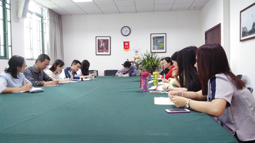
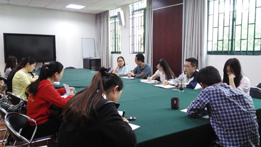

学院召开副班主任工作小结交流会 |
（华新在线讯 见习记者莫蜡梅）5月12日中午二点半，我院本科生副班主任工作总结交流会在院会议室举行。我院党委副书记夏守信、14级辅导员黄怡宁、12级辅导员陈月异，以及来自本科生各年级的副班主任老师参与了本次会议。会议主要围绕副班主任们对前段时间的工作总结和交流展开。 |
 |
会议开始，夏守信书记建议副班主任们按照四个方面内容进行交流：前段工作做了什么，接下来还想做什么，通过工作有什么收获，还需要组织为你做什么。 |
第一个发言的是1403班副班主任陈雅莉，她主要介绍了自己参与查寝、晚点名的工作情况，她认为三班的同学个性鲜明，有自己的想法。而对自己的工作，她认为自己组织协调能力得到了一定程度上的锻炼，工作中还要更进一步。 |
1404班副班主任杜思静在总结自己的工作时特别提到，平常在QQ上的聊天可以增进与学生们的距离。副班主任的工作让自己体验到作为老师的责任，也进一步的对自己的能力有所锻炼。 |
而1401班副班主任吴燕则分享了自己与学生交流的一些细节。她提到参与查寝能更深入的了解学生的生活状态，而阅读学生的人生规划不仅能更有针对性的帮助学生，更能让自己回想到本科时期的生活。同时她提出会进行一个关于《瓦尔登湖》的读书交流会，通过文学性内容的交流，从思想的层面更加了解同学们。在她分享之间，夏书记八次赞扬道“不错，很好”，他评价道：“你工作做的很好，有细节，往往细节更感染人。” |
 |
之后，13级赵霁老师也作了工作交流，她主要提到通过查寝和平常交流能够感受到同学们还是很有想法的，也结合自身本科时的学习生活在晚点名上分享过个人经验交流。她说：“和学生成为朋友，以更加平等的方式交流，可以让了解没有距离感。” |
12级副班主任王超老师提到参与班会是一个很好的了解学生的契机，孙霁老师则分享到针对于大三学生的特殊性，除了给他们补充考研、找工作的经验外，也应该适当的让他们放松一下。在接下来的工作中希望可以开展一些影评会和同学们进行交流，同时组织一些户外活动和同学们一起参加。 |
最后，11级的副班主任寇炳楠也提到自己在任职期间主要做了招聘信息的发布以及对两个小假期同学们去向统计。她希望能尽自己的帮助，让同学们的毕业更圆满。 |
在会议的最后，夏书记对副班主任们的工作致以真诚的感谢，并且称赞他们的工作做得很好，希望他们继续努力。 |
| |